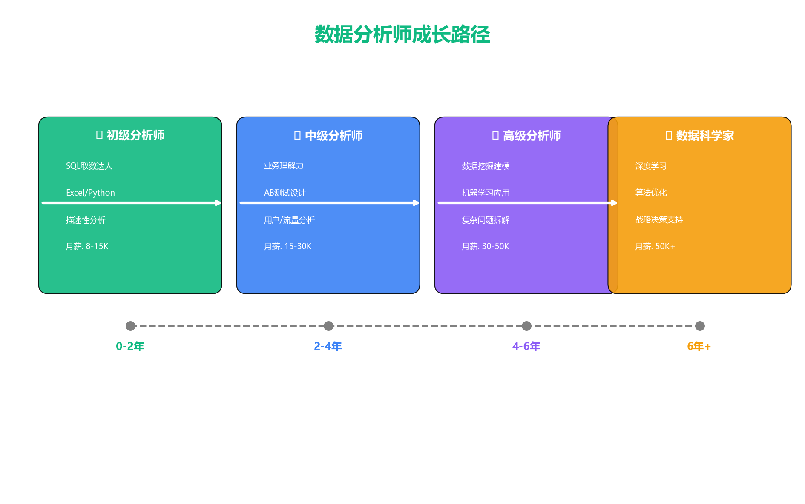
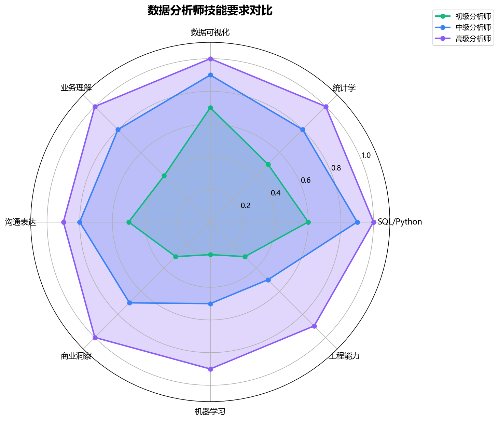
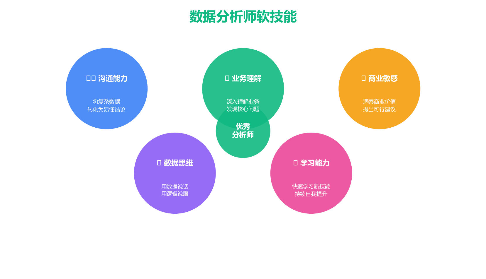
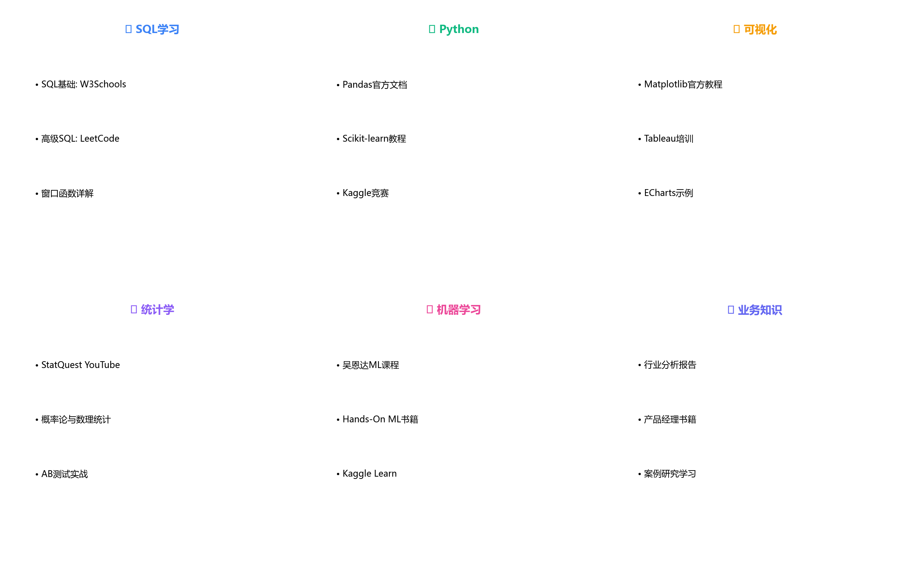
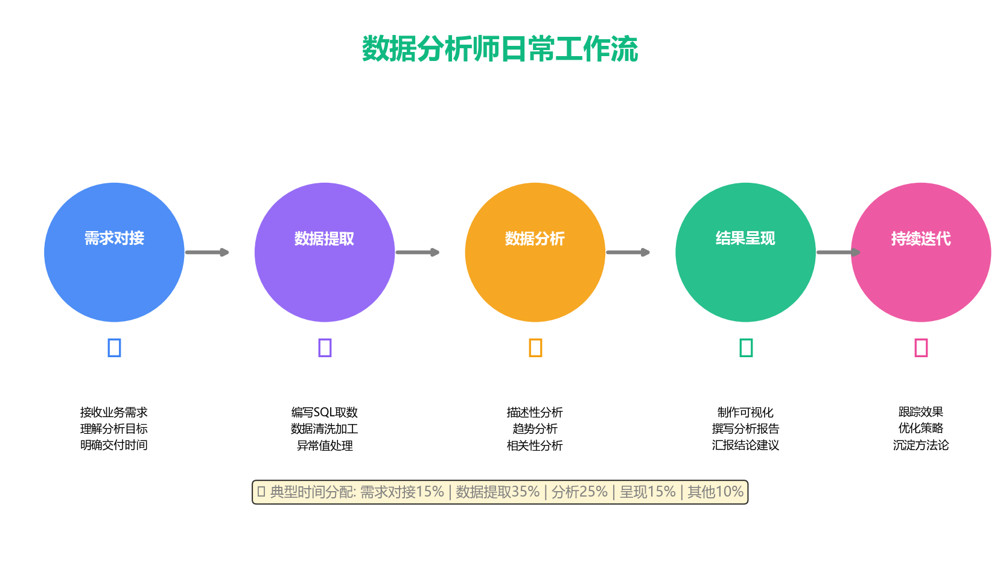
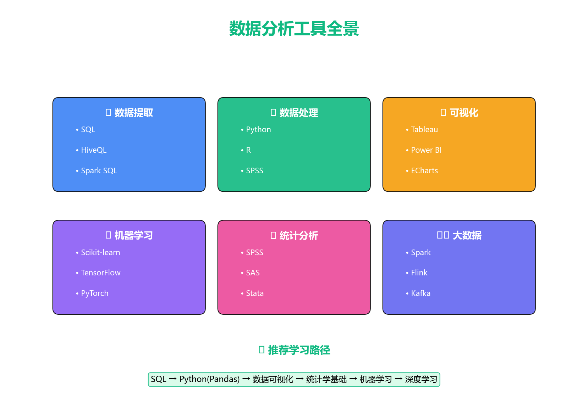
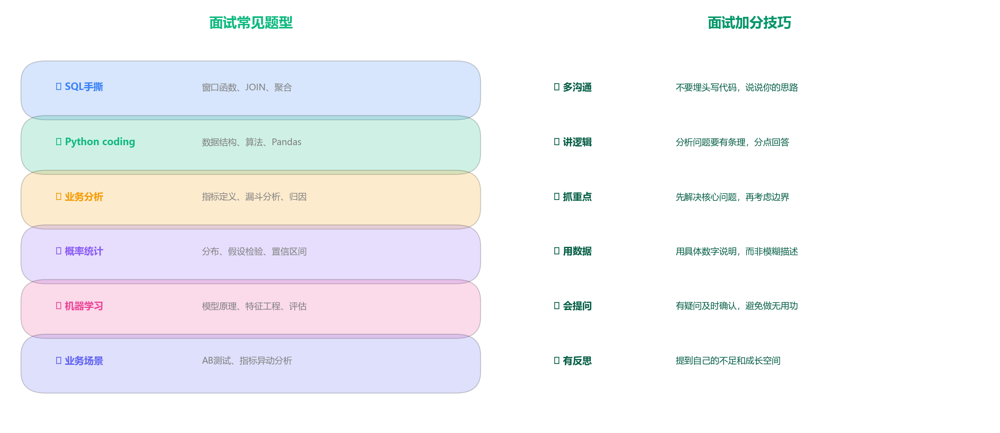
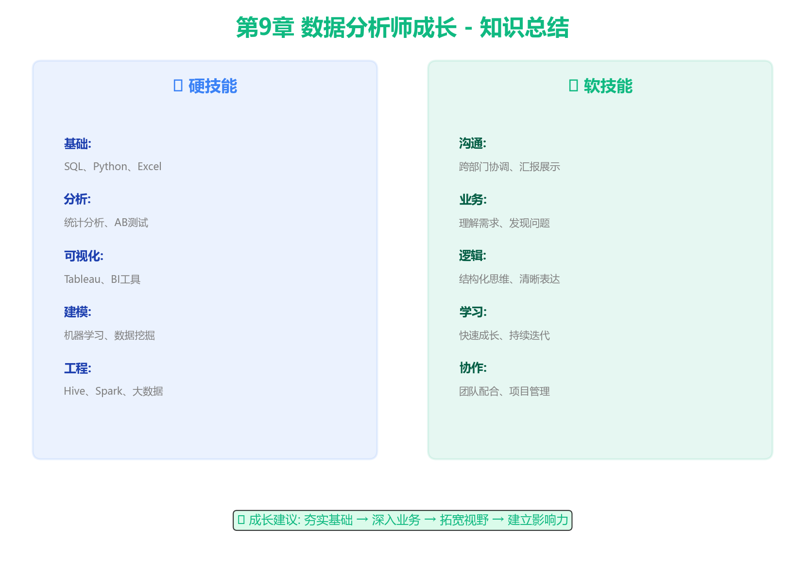

数据分析师是连接数据与业务的桥梁，用数据驱动决策，创造商业价值。

初级→中级: 2年
中级→高级: 2年
高级→科学家: 2年+



理论+实践结合，做项目是最好的学习方式

好的分析师50%时间在思考，50%在执行

SQL → Python → 可视化 → 统计学 → 机器学习

思路：内外部因素 → 数据验证 → 假设检验 → 提出建议
思路：北极星指标 → 拆解维度 → 监控体系
思路：确定目标 → 特征工程 → 算法选择 → 业务解释
思路：检查样本量 → 分析用户分群 → 考虑长期效果
选择比努力更重要，但选择后要持续努力
一线城市：8-15K/月
二线城市：6-12K/月
一线城市：15-30K/月
二线城市：10-20K/月
一线城市：30-50K/月
二线城市：20-35K/月
一线城市：50K+/月
股票/期权：核心岗位可谈
机会多、成长快、竞争激烈
稳定、积累深、转型机会多
风险高、潜力大、需谨慎
每周至少学习5小时，坚持1年会有质的飞跃

制定1年学习计划，明确目标和里程碑
制定自己的3年职业规划：
第6章：聚类分析
第7章：A/B测试
第8章：数据分析报告
第9章：数据分析师成长
恭喜你完成了全部课程！
掌握这些技能，你已经成为了一名合格的商业数据分析师